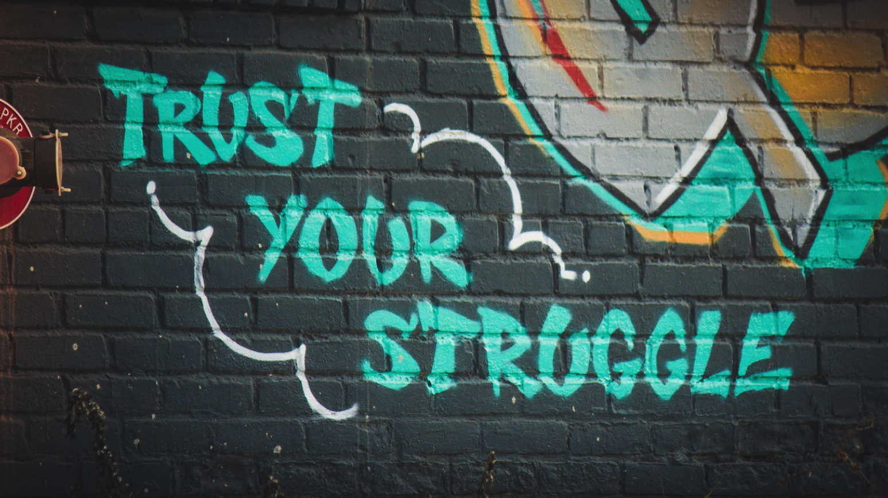

Chapter 4: Maximize your willpower

Why willpower sucks—and what do about it
"You'll see I wear only gray or blue suits. I'm trying to pare down decisions. I don't want to make decisions about what I’m eating or wearing. Because I have too many other decisions to make."
—Barack Obama, 44th President of the U.S.
Let me tell you:
I hate making decisions. And you should, too, because decisions drain your willpower faster than grass through a goose.
What is willpower—and how important is it to success?
Willpower: the ability to delay gratification, resisting short-term temptations in order to meet long-term goals.—American Psychological Association
Willpower sounds important. But is it?
Not really, according to several studies.
In this chapter you’ll:
- Discover why willpower is overrated—and what to do instead.
- See a psychological study that reveals why making decisions is more dangerous than you think.
- Understand when—and when not—to rely on your willpower.
- Learn the secret to 10x your willpower.
Your willpower is limited; plan accordingly
Get this: your willpower is limited. Each morning, you wake up with a limited amount of willpower, and every decision you make reduces your willpower.
Think of it this way: your willpower is like a gas tank that automatically gets filled up each night. In the morning your tank is full, but—with every decision—your tank goes down. By the end of the day, your tank is empty.
Here’s an interesting study that proves willpower is limited: Research led by Kathleen D. Vohs of the University of Minnesota wanted to see if making decisions decreased a person’s willpower over time. In four different studies, one group had to choose among consumer goods or college course options, while the other group merely thought about them (i.e. they didn’t make any decisions).
The results? From the study:
“Subjects who had to make a choice showed less physical stamina, reduced persistence in the face of failure, more procrastination, and less quality and quantity of arithmetic calculations.”
In other words: Decisions are exhausting. We wake up with a finite amount of willpower and can only make so many decisions; after that, we give into the “Ah, screw it” mentality.
With that in mind, here are...
Three easy ways to keep your willpower tank topped up
First, eat fruit to keep your glucose levels up. Glucose is a carbohydrate that helps our cells and organs function; glucose is also the only energy our brains can use.
Each time you make a decision, you lose glucose—which reduces your willpower. A study published in the Journal of Personality and Social Psychology showed that acts of self-control decreased blood glucose levels; it also demonstrated that low levels of glucose predicted poor performance on a subsequent self-control task.
Interestingly, when subjects were given lemonade to boost their glucose levels, their self-control improved. But when they were given sugar-free lemonade, their self-control remained low. So if you're feeling run down, eat a piece of fruit—and boost your self-control.
Second, attach meaning to what you're doing (or not doing). A research team led by Mark Muraven, Ph.D., of the University at Albany, discovered that subjects who were forced to exert self-control (e.g. in order to please others) were more easily depleted than people acting on their own beliefs and goals.
As you probably guessed by now, setting up your Board Game of Life and kanban boards will help you attach meaning to your work—and boost your willpower.
It makes sense, right? I mean, if someone asked you to shovel donkey poop, you wouldn't do it, right? But if you needed to feed your family (a meaningful goal if there ever was one), you’d be whistling while you worked.
Speaking of donkey poop, I hope that phrase made you smile. If so, your willpower just increased.
It’s true. I’ll prove it to you in our next point:
Third, improve your mood to boost your self-control. The same study showed that participants, who received surprise gifts or watched comedy videos, increased their self-control. So the next time you're feeling down, watch comedy. (I recommend Joe Rogan, Brian Regan, Eddie Murphy, Bill Burr, and Chris Rock.)
Or, if you're into this sort of thing, here's an insanely cute video of an orange kitten dressed as a lion.
How can that not improve your mood?
So the next time someone lambasts you for watching cat videos at work, show them this chapter—and tell them to go to hell.
The secret to 10x willpower
The secret to willpower is to (drumroll please…) avoid using your willpower. And the best way to avoid draining your willpower is through routines.
Routines don’t require willpower because you do them subconsciously. The more you remove decision-making from your daily routines, the more willpower and stamina you'll have to focus on what matters.
That’s why Barack Obama only wears blue or gray suits. By reducing the number of small decisions he makes, he preserves his willpower for important decisions.
Preserve your willpower through routine; we’ll discuss on how in the next chapter.
Summary
You learned about willpower, and why it’s overrated.
You also learned that willpower is limited and that you preserve willpower through routines.
Lastly, you discovered three simple ways to keep your willpower tank from running on empty. Those three things are to:
- manage your glucose levels,
- attach meaning to your work, and
- improve your mood.
What you need to do next
- Identify when you feel drained—and solve it. Is it because your glucose is low? Are you in a bad mood? Or does your work feel meaningless? Once you’ve identified the cause, take steps to fix it. The solution may be as simple as drinking a glass of lemonade, watching a kitten video, or explaining why your work is important.
- Make fewer decisions. Each decision drains your willpower; save your willpower for important decisions, and use routines for the rest. Eat the same meals. Wear the same clothes. Embrace routines—most of the time.
Congratulations! You just finished the first part of this book. Now that you have a crystal-clear view of your life, it's time to zoom in and start developing routines, blocking distractions, and following through like a champion.
In the next chapter, you'll discover how to build rock-solid routines that practically guarantee success.